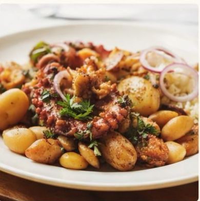
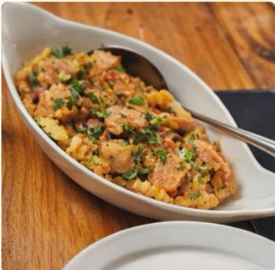
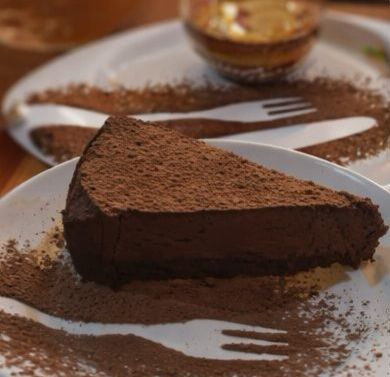

Sabor português em Recife
Um ambiente acolhedor, comidas especiais e uma experiência gastronômica para compartilhar.
Ver cardápio Falar no WhatsApp
Sobre o restaurante
A Casa Morim traz o melhor da culinária portuguesa com um ambiente acolhedor e elegante.
Cardápio

Bacalhau à Brás
Bacalhau desfiado com batatas crocantes e ovos

Polvo à Lagareiro
Polvo assado com azeite, alho e batatas ao murro

Pastel de Nata
Doce tradicional português
Destaques
Música ao vivo
Mesas externas
Wi-Fi
Contato
(81) 99999-9999
Abre todos os dias às 12:00